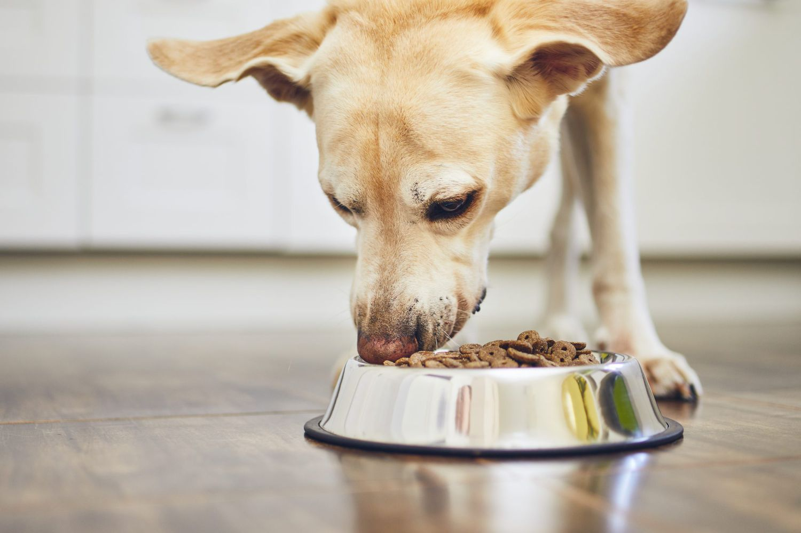
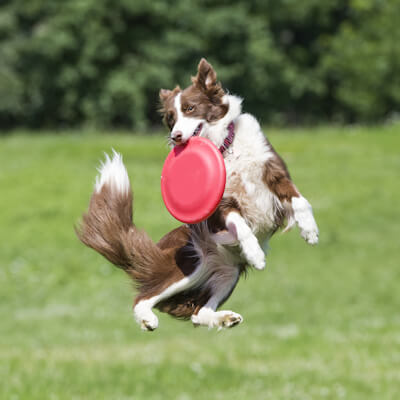

Cara merawat anak anjing hingga dewasa adalah dengan memberikan makanan yang tepat. Tujuannya agar perkembangan hewan dapat sesuai dengan usianya.
Makanan yang sehat saja tidaklah cukup. Kamu harus memberikan makanan dengan intensitas yang sesuai usianya. Berikan anjing makanan yang bernutrisi untuk memenuhi kebutuhan gizinya. Misalnya dengan memperhatikan protein, lemak, vitamin, dan mineralnya.

tetap sehat. Olahraga fisik ini cenderung membantu anjing menghilangkan rasa bosan. Dengan demikian, anjing tidak stres, lebih patuh, dan terarah.
Akan tetapi, kebutuhan latihan tiap anjing bervariasi tergantung ras, jenis kelamin, usia, dan tingkat kesehatan. Oleh karena itu, permainan yang diawasi sesuai dengan kebutuhan anjing akan sangat menyenangkan baginya.
Pantau terus kesehatan anjing dengan rutin mengunjungi dokter hewan. Pemeriksaan dan perawatan rutin ini bertujuan mendeteksi masalah kesehatan yang mungkin terjadi pada anjing sedini mungkin.
Lakukan pemeriksaan ke dokter hewan setiap 6 bulan sekali. Namun, kunjungi segera dokter hewan jika ada tanda kegawatan pada anjing. Nantinya, dokter akan memeriksa kesehatan dan juga perilaku dari anjing.